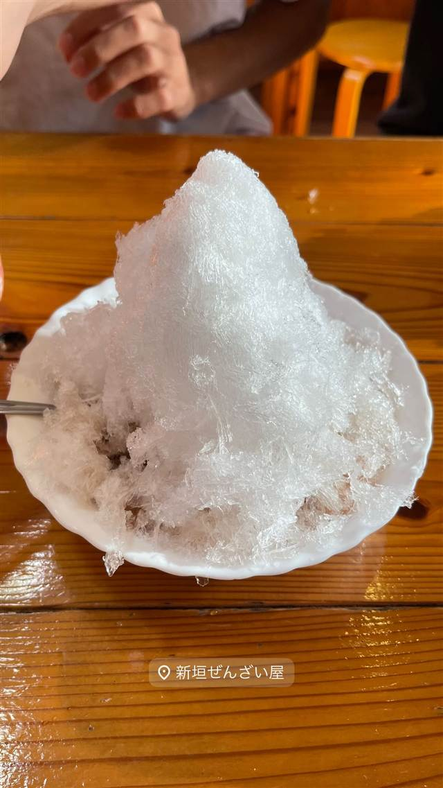

きしもと食堂(本店)
薪の木灰の上澄み液でかん水代わりに打つ木灰そば
きしもと食堂
1905年創業、現四代目が継ぐ本部町最古の沖縄そば屋。かん水の代わりに薪の木灰から取った上澄み液で打つ「木灰そば」を戦前からの製法のまま守り続け、昼時には行列ができる名店として知られる。
TRIVIA
へえ、という話
- 麺の「かん水」の代わりに薪を焼いた木灰の上澄み液を使う戦前ながらの製法を守っている
- 創業者は女性（岸本オミト氏）で、自宅の一角で始めた商いが今も続いている
| 創業 | 明治38年（1905年）創業。現在は四代目が継ぐ本部町最古の沖縄そば屋。 |
|---|---|
| 系譜 | 創業者・岸本オミト氏が渡久地港を行き交う人々に自宅の一角で沖縄そばを提供したのが始まり。 |
| 看板 | 木灰そば（沖縄そば） |
| こだわり | 薪を焼いて作った木灰を水に溶かし、その上澄み液（灰汁）をかん水代わりに使う戦前ながらの製法で麺を手打ちし、やや濃いめのカツオ出汁と合わせる。かん水が一般化した現在では珍しい手法。 |
| 掲載・受賞 | 沖縄そば屋の中でもトップクラスの知名度を誇る名店として各種メディアで紹介されている。 |
| 予算 | 昼 ¥1,000～¥1,999 夜 ¥1,000～¥1,999 |
| 定休日 | 水曜 |
| 場所 | 渡久地 沖縄県国頭郡本部町渡久地5 |
| 注意 | 本部町営市場のそばに位置し、昼時は行列必至（40分待ちの報告も）。多い日には1日400人が来店。じゅーしー（炊き込みご飯）は昼過ぎに売り切れることもあり、売り切れ次第終了。 |
食べたもの：沖縄そば
NEARBY
近い店・同じ系統の店
-

かき氷 渡久地 新垣ぜんざい屋 薪のかまどで8時間煮込む金時豆の氷ぜんざい 昼 ～¥999 夜 ～¥999 -
 定食・食堂 四ツ谷駅
かつれつ 四谷たけだ
1935年築地創業「洋食たけだ」の流れを汲む、食べログ百名店の生姜焼き定食
昼 ¥1,000～¥1,999 夜 ¥1,000～¥1,999
定食・食堂 四ツ谷駅
かつれつ 四谷たけだ
1935年築地創業「洋食たけだ」の流れを汲む、食べログ百名店の生姜焼き定食
昼 ¥1,000～¥1,999 夜 ¥1,000～¥1,999
-
 定食・食堂 恵比寿
土鍋炊ごはん なかよし 本店
土鍋で炊いたごはんがおかわり自由、都内11店舗に展開する恵比寿の老舗定食店
昼 ～¥999 夜 ¥3,000～¥3,999
定食・食堂 恵比寿
土鍋炊ごはん なかよし 本店
土鍋で炊いたごはんがおかわり自由、都内11店舗に展開する恵比寿の老舗定食店
昼 ～¥999 夜 ¥3,000～¥3,999
-
 定食・食堂 橋本
よしの食堂
1966年創業、壁一面50種類超のメニューが並ぶ孤独のグルメのロケ地
昼 ～¥999 夜 ～¥999
定食・食堂 橋本
よしの食堂
1966年創業、壁一面50種類超のメニューが並ぶ孤独のグルメのロケ地
昼 ～¥999 夜 ～¥999
-
 定食・食堂 新橋駅
さかな 地鶏 舞浜
食べログ居酒屋百名店、身がほろりとした焼き鮭定食
昼 ¥1,000～¥1,500 夜 ¥5,000
定食・食堂 新橋駅
さかな 地鶏 舞浜
食べログ居酒屋百名店、身がほろりとした焼き鮭定食
昼 ¥1,000～¥1,500 夜 ¥5,000
-
 定食・食堂 （バス/タクシー）八千穂駅
八千穂山荘
標高1800mの高原、佐久穂町産スレート石の展望風呂と地元食材の家庭料理
定食・食堂 （バス/タクシー）八千穂駅
八千穂山荘
標高1800mの高原、佐久穂町産スレート石の展望風呂と地元食材の家庭料理